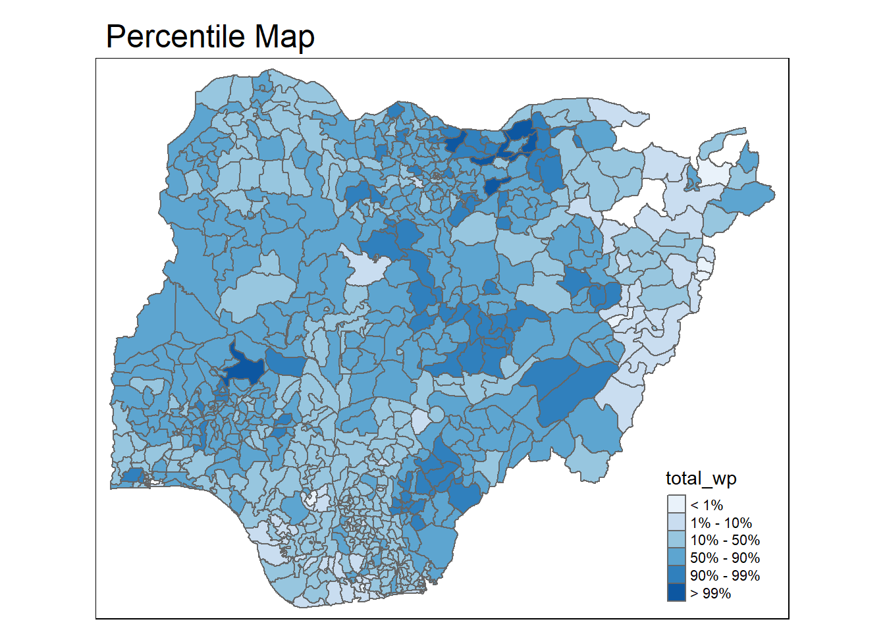

pacman::p_load(sf, tmap, tidyverse)Analytical Mapping
Loading packages and importing dataset
NGA_wp <- read_rds("rds/NGA_wp.rds")Plotting the choropleth map
p1 <- tm_shape(NGA_wp) +
tm_fill("wp_functional",
n = 10,
style = "equal",
palette = "BuPu") +
tm_borders(lwd = 0.1,
alpha = 1) +
tm_layout(main.title = "Distribution of functional water point by LGAs",
legend.outside = FALSE)p2 <- tm_shape(NGA_wp) +
tm_fill("total_wp",
n = 10,
style = "equal",
palette = "BuPu") +
tm_borders(lwd = 0.1,
alpha = 1) +
tm_layout(main.title = "Distribution of total water point by LGAs",
legend.outside = FALSE)tmap_arrange(p2, p1, nrow = 1)Mapping Rates (Proportions)
First, derive the percentages in the table.
NGA_wp <- NGA_wp %>%
mutate(pct_functional = wp_functional/total_wp) %>%
mutate(pct_nonfunctional = wp_nonfunctional/total_wp)
Plot the map:
p3 <- tm_shape(NGA_wp) +
tm_fill("pct_functional",
n = 10,
style = "equal",
palette = "BuPu") +
tm_borders(lwd = 0.1,
alpha = 1) +
tm_layout(main.title = "Distribution of functional water point by LGAs",
legend.outside = TRUE)
p3Extreme value maps
These are variations of common choropleth maps where the classification is designed to highlight extreme values at the lower and upper end of the scale, with the goal of identifying outliers.
Percentile maps
The percentile map is a special type of quantile map with six specific categories: 0-1%,1-10%, 10-50%,50-90%,90-99%, and 99-100%. The corresponding breakpoints can be derived by means of the base R quantile command, passing an explicit vector of cumulative probabilities as c(0,.01,.1,.5,.9,.99,1). Note that the begin and endpoint need to be included.
Prep the data:
NGA_wp <- NGA_wp %>%
drop_na()
percent <- c(0,.01,.1,.5,.9,.99,1)
var <- NGA_wp["pct_functional"] %>%
st_set_geometry(NULL)
quantile(var[,1], percent) 0% 1% 10% 50% 90% 99% 100%
0.0000000 0.0000000 0.2169811 0.4791667 0.8611111 1.0000000 1.0000000 (Note: st_set_geometry(NULL) is used to drop the geometry field so that base r doesn’t struggle with it when extracting variables.)
Creating the get.var function
get.var <- function(vname,df) {
v <- df[vname] %>%
st_set_geometry(NULL)
v <- unname(v[,1])
return(v)
}A percentile mapping function
percentmap <- function(vnam, df, legtitle=NA, mtitle="Percentile Map"){
percent <- c(0,.01,.1,.5,.9,.99,1)
var <- get.var(vnam, df)
bperc <- quantile(var, percent)
tm_shape(df) +
tm_polygons() +
tm_shape(df) +
tm_fill(vnam,
title=legtitle,
breaks=bperc,
palette="Blues",
labels=c("< 1%", "1% - 10%", "10% - 50%", "50% - 90%", "90% - 99%", "> 99%")) +
tm_borders() +
tm_layout(main.title = mtitle,
title.position = c("right","bottom"))
}
Run them:
percentmap("total_wp", NGA_wp)
Box maps
A box map is an augmented quartile map, with an additional lower and upper category. When there are lower outliers, then the starting point for the breaks is the minimum value, and the second break is the lower fence. In contrast, when there are no lower outliers, then the starting point for the breaks will be the lower fence, and the second break is the minimum value (there will be no observations that fall in the interval between the lower fence and the minimum value).
ggplot(data = NGA_wp,
aes(x = "",
y = wp_nonfunctional)) +
geom_boxplot()Creating the boxbreaks function
Arguments:
v : vector with observations
mult : multiplier for inter-quartile range (default is 1.5)
Returns:
- bb: vector with 7 break points compute quartile and fences
boxbreaks <- function(v,mult=1.5) {
qv <- unname(quantile(v))
iqr <- qv[4] - qv[2]
upfence <- qv[4] + mult * iqr
lofence <- qv[2] - mult * iqr
# initialize break points vector
bb <- vector(mode="numeric",length=7)
# logic for lower and upper fences
if (lofence < qv[1]) { # no lower outliers
bb[1] <- lofence
bb[2] <- floor(qv[1])
} else {
bb[2] <- lofence
bb[1] <- qv[1]
}
if (upfence > qv[5]) { # no upper outliers
bb[7] <- upfence
bb[6] <- ceiling(qv[5])
} else {
bb[6] <- upfence
bb[7] <- qv[5]
}
bb[3:5] <- qv[2:4]
return(bb)
}Creating the get.var function
get.var <- function(vname,df) {
v <- df[vname] %>% st_set_geometry(NULL)
v <- unname(v[,1])
return(v)
}
Run it:
var <- get.var("wp_nonfunctional", NGA_wp)
boxbreaks(var)[1] -56.5 0.0 14.0 34.0 61.0 131.5 278.0The Boxmap function
boxmap <- function(vnam, df,
legtitle=NA,
mtitle="Box Map",
mult=1.5){
var <- get.var(vnam,df)
bb <- boxbreaks(var)
tm_shape(df) +
tm_polygons() +
tm_shape(df) +
tm_fill(vnam,title=legtitle,
breaks=bb,
palette="Blues",
labels = c("lower outlier",
"< 25%",
"25% - 50%",
"50% - 75%",
"> 75%",
"upper outlier")) +
tm_borders() +
tm_layout(main.title = mtitle,
title.position = c("left",
"top"))
}tmap_mode("plot")
boxmap("wp_nonfunctional", NGA_wp)